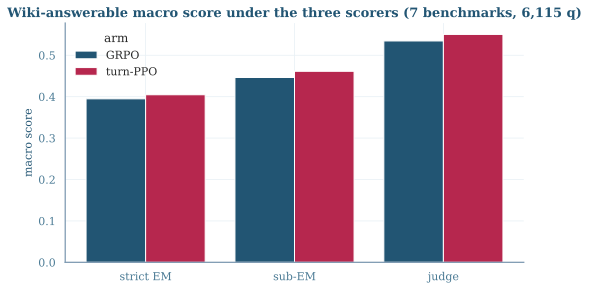
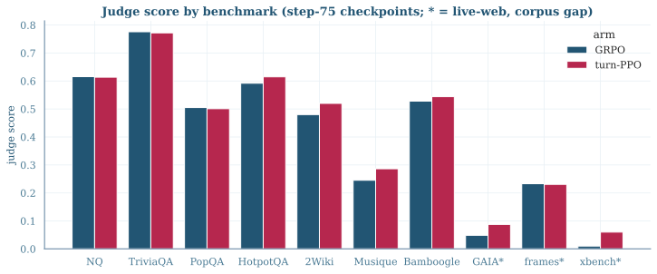
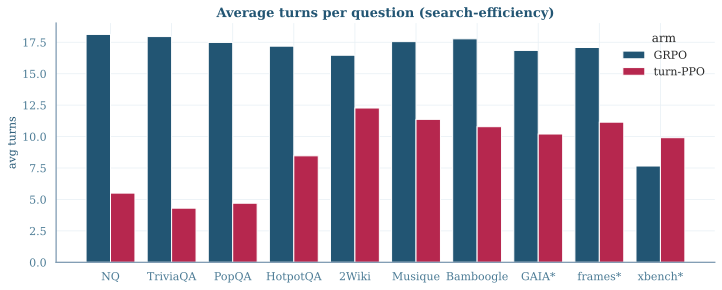

<answer> at all (loops to the turn cap);
turn-PPO only 0.5%.Both step-75 checkpoints evaluated over the full ASearcher test suite. Wiki-answerable = the 7 benchmarks our offline wiki-18 retriever can serve; live-web = the 3 that need the open web (reported separately — they measure the corpus gap, not credit assignment).
| Slice | Arm | n questions | judge | strict EM | sub-EM |
|---|---|---|---|---|---|
| Wiki-answerable (7 benchmarks, macro) | GRPO | 6,115 | 0.535 | 0.395 | 0.446 |
| turn-PPO | 6,115 | 0.550 | 0.405 | 0.461 | |
| Live-web (3 benchmarks, macro) | GRPO | 1,027 | 0.097 | 0.061 | 0.066 |
| turn-PPO | 1,027 | 0.126 | 0.078 | 0.087 | |
| All 10 benchmarks (macro) | GRPO | 7,142 | 0.403 | 0.295 | — |
| turn-PPO | 7,142 | 0.423 | 0.306 | — |

Judge scores per benchmark. Single-hop (NQ / TriviaQA / PopQA) is a dead heat (±0.01); turn-PPO wins every multi-hop benchmark (+0.02–0.04): HotpotQA 0.615 vs 0.592, 2Wiki 0.520 vs 0.480, Musique 0.286 vs 0.245, Bamboogle 0.544 vs 0.528.

| Benchmark | n | GRPO judge | turn-PPO judge | GRPO EM | turn-PPO EM | GRPO turns | turn-PPO turns |
|---|---|---|---|---|---|---|---|
| NQ | 999 | 0.616 | 0.614 | 0.428 | 0.433 | 18.1 | 5.5 |
| TriviaQA | 1000 | 0.776 | 0.772 | 0.577 | 0.572 | 18.0 | 4.3 |
| PopQA | 992 | 0.505 | 0.501 | 0.446 | 0.438 | 17.5 | 4.7 |
| HotpotQA | 1000 | 0.592 | 0.615 | 0.401 | 0.419 | 17.2 | 8.5 |
| 2WikiMultihopQA | 1000 | 0.480 | 0.520 | 0.389 | 0.407 | 16.5 | 12.3 |
| Musique | 999 | 0.245 | 0.286 | 0.147 | 0.179 | 17.6 | 11.4 |
| Bamboogle | 125 | 0.528 | 0.544 | 0.376 | 0.384 | 17.8 | 10.8 |
| GAIA live-web | 103 | 0.049 | 0.087 | 0.049 | 0.078 | 16.9 | 10.2 |
| frames live-web | 824 | 0.233 | 0.231 | 0.135 | 0.125 | 17.1 | 11.1 |
| xbench-deepsearch live-web | 100 | 0.010 | 0.060 | 0.000 | 0.030 | 7.7 | 9.9 |
GRPO runs essentially every question to near the turn cap (16.5–18.1 avg turns, uniformly — including single-hop questions answerable in one search). turn-PPO modulates its budget with difficulty: ~4–5 turns on single-hop, 8–12 on multi-hop. At equal-or-better accuracy this is a 2–4× cheaper policy at inference time, and matches the training-side observation (turn-PPO 6.5 searches/question vs GRPO 16.1 at step 75).

Three scorers on identical trajectories. Strict EM is the metric the training env rewards
(compute_score) and what every val/em curve reports; the judge (gpt-oss-120b, frozen
MBE prompt) is the closest to human judgment.
| Arm | judge–EM agreement | judge✓ EM✗ | judge✗ EM✓ | EM vs env reward | no-answer frac | judge failures |
|---|---|---|---|---|---|---|
| GRPO | 0.870 | 930 | 3 | 1.000 | 0.080 | 0 |
| turn-PPO | 0.863 | 974 | 3 | 1.000 | 0.005 | 0 |
The disagreement is one-directional (99.7% of disagreements are judge-correct/EM-wrong): strict EM misses
formatting variants, aliases, and paraphrases. EM vs env reward = 1.000 confirms the pipeline
recomputes exactly the reward the env assigned — the eval is internally consistent with training. Judge
calibration on the manual smoke set: 0.983 vs EM on 60 hand-checked items, with the one systematic strictness
note that the judge occasionally rejects a technically-gold answer with wrong granularity.
token_grpo_qwen3-8b-base_32turn_fast75_s0 and
turn_ppo_b0_qwen3-8b-base_32turn_fast75_s0 at step 75 (75 steps, unfiltered Base-35k,
fast config: partial rollout 8/4 + dynamic token batching + chunked prefill).val_only greedy rollouts, 32-turn cap, top-5 wiki-18 e5 retrieval,
identical env to training; full trajectory dumps on HDFS
(logs/p8b_eval_{grpo,turnppo}_s75/rollout_eval_*.jsonl.zst).scripts/asearcher/judge_rollouts.py — dump → trajectory fold → gold join
→ concurrent judging (gpt-oss-120b, TP4, mxfp4) → per-benchmark aggregation. Summaries in
outputs/judge/*.summary.json; cross-arm table outputs/judge/cross_arm_s75.md.# reproduce the cross-arm table
python scripts/asearcher/compare_eval_summaries.py \
outputs/judge/grpo_s75.summary.json outputs/judge/turnppo_s75.summary.json \
--out outputs/judge/cross_arm_s75.md